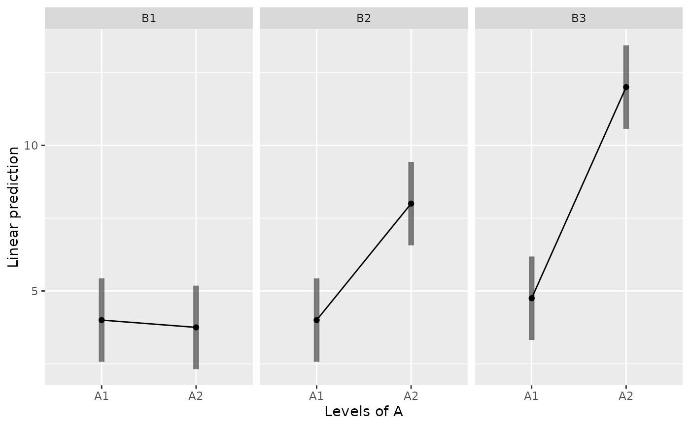

Multi-factor ANOVA (between-subjects, within-subjects, and mixed designs), with and without covariates (ANCOVA).
This function is based on and extends afex::aov_ez().
You only need to specify the data, dependent variable(s), and factors
(between-subjects and/or within-subjects).
Almost all results you need will be displayed together,
including effect sizes (partial \(\eta^2\)) and their confidence intervals (CIs).
90% CIs for partial \(\eta^2\) (two-sided) are reported, following Steiger (2004).
In addition to partial \(\eta^2\), it also reports generalized \(\eta^2\), following Olejnik & Algina (2003).
How to prepare your data and specify the arguments of MANOVA?
Wide-format data (one person in one row, and repeated measures in multiple columns):
- Betweem-subjects design
MANOVA(data=, dv=, between=, ...)- Within-subjects design
MANOVA(data=, dvs=, dvs.pattern=, within=, ...)- Mixed design
MANOVA(data=, dvs=, dvs.pattern=, between=, within=, ...)
Long-format data (one person in multiple rows, and repeated measures in one column):
- Betweem-subjects design
(not applicable)
- Within-subjects design
MANOVA(data=, subID=, dv=, within=, ...)- Mixed design
MANOVA(data=, subID=, dv=, between=, within=, ...)
Usage
MANOVA(
data,
subID = NULL,
dv = NULL,
dvs = NULL,
dvs.pattern = NULL,
between = NULL,
within = NULL,
covariate = NULL,
ss.type = "III",
sph.correction = "none",
aov.include = FALSE,
digits = 3,
nsmall = digits,
file = NULL
)Arguments
- data
Data frame. Both wide-format and long-format are supported.
- subID
Subject ID (the column name). Only necessary for long-format data.
- dv
Dependent variable.
For wide-format data,
dvonly can be used for between-subjects designs. For within-subjects and mixed designs, please usedvsanddvs.pattern.For long-format data,
dvis the outcome variable.
- dvs
Repeated measures. Only for wide-format data (within-subjects or mixed designs).
Two ways to specify this argument:
Use
":"to specify the range of variables: e.g.,"A1B1:A2B3"(similar to the SPSS syntax "TO" and the order of variables matters)Use a character vector to specify variable names: e.g.,
c("Cond1", "Cond2", "Cond3")
- dvs.pattern
If you use
dvs, you should also specify the pattern of variable names using regular expression.Examples:
"Cond(.)"extracts levels from"Cond1", "Cond2", "Cond3", ...You may rename the factor using thewithinargument (e.g.,within="Condition")"X(..)Y(..)"extracts levels from"X01Y01", "X02Y02", "XaaYbc", ..."X(.+)Y(.+)"extracts levels from"X1Y1", "XaYb", "XaY002", ...
Tips on regular expression:
"(.)"extracts any single character (number, letter, and other symbols)"(.+)"extracts >= 1 character(s)"(.*)"extracts >= 0 character(s)"([0-9])"extracts any single number"([a-z])"extracts any single letterMore information: Link 1 (in English) and Link 2 (in Chinese)
- between
Between-subjects factor(s). Multiple variables should be included in a character vector
c().- within
Within-subjects factor(s). Multiple variables should be included in a character vector
c().- covariate
Covariates. Multiple variables should be included in a character vector
c().- ss.type
Type of sums of squares (SS) for ANOVA. Default is
"III". Possible values are"II","III",2, or3.- sph.correction
[Only for repeated measures with >= 3 levels]
Sphericity correction method for adjusting the degrees of freedom (df) when the sphericity assumption is violated. Default is
"none". If Mauchly's test of sphericity is significant, you may set it to"GG"(Greenhouse-Geisser) or"HF"(Huynh-Feldt).- aov.include
Include the
aovobject in the returned object? Default isFALSE, as suggested byafex::aov_ez()(please see theinclude_aovargument in this help page, which provides a detailed explanation). IfTRUE, you should also specifymodel.type="univariate"inEMMEANS.- digits, nsmall
Number of decimal places of output. Default is
3.- file
File name of MS Word (
.doc).
Value
A result object (list) returned by
afex::aov_ez(),
along with several other elements:
between, within,
data.wide, data.long.
Details
If observations are not uniquely identified in user-defined long-format data,
the function takes averages across those multiple observations for each case.
In technical details, it specifies fun_aggregate=mean in afex::aov_ez()
and values_fn=mean in tidyr::pivot_wider().
Interaction Plot
You can save the returned object and use the emmeans::emmip() function
to create an interaction plot (based on the fitted model and a formula specification).
For usage, please see the help page of emmeans::emmip().
It returns an object of class ggplot, which can be easily modified and saved using ggplot2 syntax.
References
Olejnik, S., & Algina, J. (2003). Generalized eta and omega squared statistics: Measures of effect size for some common research designs. Psychological Methods, 8(4), 434-447.
Steiger, J. H. (2004). Beyond the F test: Effect size confidence intervals and tests of close fit in the analysis of variance and contrast analysis. Psychological Methods, 9(2), 164-182.
Examples
#### Between-Subjects Design ####
between.1
#> A SCORE
#> 1 1 3
#> 2 1 6
#> 3 1 4
#> 4 1 3
#> 5 1 5
#> 6 1 7
#> 7 1 5
#> 8 1 2
#> 9 2 4
#> 10 2 6
#> 11 2 4
#> 12 2 2
#> 13 2 4
#> 14 2 5
#> 15 2 3
#> 16 2 3
#> 17 3 8
#> 18 3 9
#> 19 3 8
#> 20 3 7
#> 21 3 5
#> 22 3 6
#> 23 3 7
#> 24 3 6
#> 25 4 9
#> 26 4 8
#> 27 4 8
#> 28 4 7
#> 29 4 12
#> 30 4 13
#> 31 4 12
#> 32 4 11
MANOVA(between.1, dv="SCORE", between="A")
#>
#> ====== ANOVA (Between-Subjects Design) ======
#>
#> Descriptives:
#> ─────────────────────
#> "A" Mean S.D. n
#> ─────────────────────
#> A1 4.375 (1.685) 8
#> A2 3.875 (1.246) 8
#> A3 7.000 (1.309) 8
#> A4 10.000 (2.268) 8
#> ─────────────────────
#> Total sample size: N = 32
#>
#> ANOVA Table:
#> Dependent variable(s): SCORE
#> Between-subjects factor(s): A
#> Within-subjects factor(s): –
#> Covariate(s): –
#> ─────────────────────────────────────────────────────────────────
#> MS MSE df1 df2 F p η²p [90% CI of η²p] η²G
#> ─────────────────────────────────────────────────────────────────
#> A 63.375 2.812 3 28 22.533 <.001 *** .707 [.526, .798] .707
#> ─────────────────────────────────────────────────────────────────
#> MSE = mean square error (the residual variance of the linear model)
#> η²p = partial eta-squared = SS / (SS + SSE) = F * df1 / (F * df1 + df2)
#> ω²p = partial omega-squared = (F - 1) * df1 / (F * df1 + df2 + 1)
#> η²G = generalized eta-squared (see Olejnik & Algina, 2003)
#> Cohen’s f² = η²p / (1 - η²p)
#>
#> Levene’s Test for Homogeneity of Variance:
#> ───────────────────────────────────────
#> Levene’s F df1 df2 p
#> ───────────────────────────────────────
#> DV: SCORE 3.235 3 28 .037 *
#> ───────────────────────────────────────
#>
between.2
#> A B SCORE
#> 1 1 1 3
#> 2 1 1 6
#> 3 1 1 4
#> 4 1 1 3
#> 5 1 2 4
#> 6 1 2 6
#> 7 1 2 4
#> 8 1 2 2
#> 9 1 3 5
#> 10 1 3 7
#> 11 1 3 5
#> 12 1 3 2
#> 13 2 1 4
#> 14 2 1 5
#> 15 2 1 3
#> 16 2 1 3
#> 17 2 2 8
#> 18 2 2 9
#> 19 2 2 8
#> 20 2 2 7
#> 21 2 3 12
#> 22 2 3 13
#> 23 2 3 12
#> 24 2 3 11
MANOVA(between.2, dv="SCORE", between=c("A", "B"))
#>
#> ====== ANOVA (Between-Subjects Design) ======
#>
#> Descriptives:
#> ─────────────────────────
#> "A" "B" Mean S.D. n
#> ─────────────────────────
#> A1 B1 4.000 (1.414) 4
#> A1 B2 4.000 (1.633) 4
#> A1 B3 4.750 (2.062) 4
#> A2 B1 3.750 (0.957) 4
#> A2 B2 8.000 (0.816) 4
#> A2 B3 12.000 (0.816) 4
#> ─────────────────────────
#> Total sample size: N = 24
#>
#> ANOVA Table:
#> Dependent variable(s): SCORE
#> Between-subjects factor(s): A, B
#> Within-subjects factor(s): –
#> Covariate(s): –
#> ─────────────────────────────────────────────────────────────────────
#> MS MSE df1 df2 F p η²p [90% CI of η²p] η²G
#> ─────────────────────────────────────────────────────────────────────
#> A 80.667 1.861 1 18 43.343 <.001 *** .707 [.482, .817] .707
#> B 40.542 1.861 2 18 21.784 <.001 *** .708 [.470, .815] .708
#> A x B 28.292 1.861 2 18 15.201 <.001 *** .628 [.347, .763] .628
#> ─────────────────────────────────────────────────────────────────────
#> MSE = mean square error (the residual variance of the linear model)
#> η²p = partial eta-squared = SS / (SS + SSE) = F * df1 / (F * df1 + df2)
#> ω²p = partial omega-squared = (F - 1) * df1 / (F * df1 + df2 + 1)
#> η²G = generalized eta-squared (see Olejnik & Algina, 2003)
#> Cohen’s f² = η²p / (1 - η²p)
#>
#> Levene’s Test for Homogeneity of Variance:
#> ───────────────────────────────────────
#> Levene’s F df1 df2 p
#> ───────────────────────────────────────
#> DV: SCORE 0.605 5 18 .697
#> ───────────────────────────────────────
#>
between.3
#> A B C SCORE
#> 1 1 1 1 3
#> 2 1 1 1 6
#> 3 1 1 1 4
#> 4 1 1 1 3
#> 5 1 1 2 5
#> 6 1 1 2 7
#> 7 1 1 2 5
#> 8 1 1 2 2
#> 9 1 2 1 4
#> 10 1 2 1 6
#> 11 1 2 1 4
#> 12 1 2 1 2
#> 13 1 2 2 4
#> 14 1 2 2 5
#> 15 1 2 2 3
#> 16 1 2 2 3
#> 17 2 1 1 8
#> 18 2 1 1 9
#> 19 2 1 1 8
#> 20 2 1 1 7
#> 21 2 1 2 5
#> 22 2 1 2 6
#> 23 2 1 2 7
#> 24 2 1 2 6
#> 25 2 2 1 9
#> 26 2 2 1 8
#> 27 2 2 1 8
#> 28 2 2 1 7
#> 29 2 2 2 12
#> 30 2 2 2 13
#> 31 2 2 2 12
#> 32 2 2 2 11
MANOVA(between.3, dv="SCORE", between=c("A", "B", "C"))
#>
#> ====== ANOVA (Between-Subjects Design) ======
#>
#> Descriptives:
#> ─────────────────────────────
#> "A" "B" "C" Mean S.D. n
#> ─────────────────────────────
#> A1 B1 C1 4.000 (1.414) 4
#> A1 B1 C2 4.750 (2.062) 4
#> A1 B2 C1 4.000 (1.633) 4
#> A1 B2 C2 3.750 (0.957) 4
#> A2 B1 C1 8.000 (0.816) 4
#> A2 B1 C2 6.000 (0.816) 4
#> A2 B2 C1 8.000 (0.816) 4
#> A2 B2 C2 12.000 (0.816) 4
#> ─────────────────────────────
#> Total sample size: N = 32
#>
#> ANOVA Table:
#> Dependent variable(s): SCORE
#> Between-subjects factor(s): A, B, C
#> Within-subjects factor(s): –
#> Covariate(s): –
#> ──────────────────────────────────────────────────────────────────────────
#> MS MSE df1 df2 F p η²p [90% CI of η²p] η²G
#> ──────────────────────────────────────────────────────────────────────────
#> A 153.125 1.563 1 24 98.000 <.001 *** .803 [.670, .870] .803
#> B 12.500 1.563 1 24 8.000 .009 ** .250 [.042, .466] .250
#> C 3.125 1.563 1 24 2.000 .170 .077 [.000, .283] .077
#> A x B 24.500 1.563 1 24 15.680 <.001 *** .395 [.147, .585] .395
#> A x C 1.125 1.563 1 24 0.720 .405 .029 [.000, .206] .029
#> B x C 12.500 1.563 1 24 8.000 .009 ** .250 [.042, .466] .250
#> A x B x C 24.500 1.563 1 24 15.680 <.001 *** .395 [.147, .585] .395
#> ──────────────────────────────────────────────────────────────────────────
#> MSE = mean square error (the residual variance of the linear model)
#> η²p = partial eta-squared = SS / (SS + SSE) = F * df1 / (F * df1 + df2)
#> ω²p = partial omega-squared = (F - 1) * df1 / (F * df1 + df2 + 1)
#> η²G = generalized eta-squared (see Olejnik & Algina, 2003)
#> Cohen’s f² = η²p / (1 - η²p)
#>
#> Levene’s Test for Homogeneity of Variance:
#> ───────────────────────────────────────
#> Levene’s F df1 df2 p
#> ───────────────────────────────────────
#> DV: SCORE 0.668 7 24 .697
#> ───────────────────────────────────────
#>
## How to create an interaction plot using `emmeans::emmip()`?
## See help page for its usage: ?emmeans::emmip()
m = MANOVA(between.2, dv="SCORE", between=c("A", "B"))
#>
#> ====== ANOVA (Between-Subjects Design) ======
#>
#> Descriptives:
#> ─────────────────────────
#> "A" "B" Mean S.D. n
#> ─────────────────────────
#> A1 B1 4.000 (1.414) 4
#> A1 B2 4.000 (1.633) 4
#> A1 B3 4.750 (2.062) 4
#> A2 B1 3.750 (0.957) 4
#> A2 B2 8.000 (0.816) 4
#> A2 B3 12.000 (0.816) 4
#> ─────────────────────────
#> Total sample size: N = 24
#>
#> ANOVA Table:
#> Dependent variable(s): SCORE
#> Between-subjects factor(s): A, B
#> Within-subjects factor(s): –
#> Covariate(s): –
#> ─────────────────────────────────────────────────────────────────────
#> MS MSE df1 df2 F p η²p [90% CI of η²p] η²G
#> ─────────────────────────────────────────────────────────────────────
#> A 80.667 1.861 1 18 43.343 <.001 *** .707 [.482, .817] .707
#> B 40.542 1.861 2 18 21.784 <.001 *** .708 [.470, .815] .708
#> A x B 28.292 1.861 2 18 15.201 <.001 *** .628 [.347, .763] .628
#> ─────────────────────────────────────────────────────────────────────
#> MSE = mean square error (the residual variance of the linear model)
#> η²p = partial eta-squared = SS / (SS + SSE) = F * df1 / (F * df1 + df2)
#> ω²p = partial omega-squared = (F - 1) * df1 / (F * df1 + df2 + 1)
#> η²G = generalized eta-squared (see Olejnik & Algina, 2003)
#> Cohen’s f² = η²p / (1 - η²p)
#>
#> Levene’s Test for Homogeneity of Variance:
#> ───────────────────────────────────────
#> Levene’s F df1 df2 p
#> ───────────────────────────────────────
#> DV: SCORE 0.605 5 18 .697
#> ───────────────────────────────────────
#>
emmip(m, ~ A | B, CIs=TRUE)

emmip(m, ~ B | A, CIs=TRUE)
emmip(m, B ~ A, CIs=TRUE)
emmip(m, A ~ B, CIs=TRUE)
#### Within-Subjects Design ####
within.1
#> ID A1 A2 A3 A4
#> 1 S1 3 4 8 9
#> 2 S2 6 6 9 8
#> 3 S3 4 4 8 8
#> 4 S4 3 2 7 7
#> 5 S5 5 4 5 12
#> 6 S6 7 5 6 13
#> 7 S7 5 3 7 12
#> 8 S8 2 3 6 11
MANOVA(within.1, dvs="A1:A4", dvs.pattern="A(.)",
within="A")
#>
#> ====== ANOVA (Within-Subjects Design) ======
#>
#> Descriptives:
#> ─────────────────────
#> "A" Mean S.D. n
#> ─────────────────────
#> A1 4.375 (1.685) 8
#> A2 3.875 (1.246) 8
#> A3 7.000 (1.309) 8
#> A4 10.000 (2.268) 8
#> ─────────────────────
#> Total sample size: N = 8
#>
#> ANOVA Table:
#> Dependent variable(s): A1, A2, A3, A4
#> Between-subjects factor(s): –
#> Within-subjects factor(s): A
#> Covariate(s): –
#> ─────────────────────────────────────────────────────────────────
#> MS MSE df1 df2 F p η²p [90% CI of η²p] η²G
#> ─────────────────────────────────────────────────────────────────
#> A 63.375 2.518 3 21 25.170 <.001 *** .782 [.609, .858] .707
#> ─────────────────────────────────────────────────────────────────
#> MSE = mean square error (the residual variance of the linear model)
#> η²p = partial eta-squared = SS / (SS + SSE) = F * df1 / (F * df1 + df2)
#> ω²p = partial omega-squared = (F - 1) * df1 / (F * df1 + df2 + 1)
#> η²G = generalized eta-squared (see Olejnik & Algina, 2003)
#> Cohen’s f² = η²p / (1 - η²p)
#>
#> Levene’s Test for Homogeneity of Variance:
#> No between-subjects factors. No need to do the Levene’s test.
#>
#> Mauchly’s Test of Sphericity:
#> ────────────────────────
#> Mauchly's W p
#> ────────────────────────
#> A 0.1899 .095 .
#> ────────────────────────
#>
## the same:
MANOVA(within.1, dvs=c("A1", "A2", "A3", "A4"), dvs.pattern="A(.)",
within="MyFactor") # renamed the within-subjects factor
#>
#> ====== ANOVA (Within-Subjects Design) ======
#>
#> Descriptives:
#> ────────────────────────────
#> "MyFactor" Mean S.D. n
#> ────────────────────────────
#> MyFactor1 4.375 (1.685) 8
#> MyFactor2 3.875 (1.246) 8
#> MyFactor3 7.000 (1.309) 8
#> MyFactor4 10.000 (2.268) 8
#> ────────────────────────────
#> Total sample size: N = 8
#>
#> ANOVA Table:
#> Dependent variable(s): A1, A2, A3, A4
#> Between-subjects factor(s): –
#> Within-subjects factor(s): MyFactor
#> Covariate(s): –
#> ────────────────────────────────────────────────────────────────────────
#> MS MSE df1 df2 F p η²p [90% CI of η²p] η²G
#> ────────────────────────────────────────────────────────────────────────
#> MyFactor 63.375 2.518 3 21 25.170 <.001 *** .782 [.609, .858] .707
#> ────────────────────────────────────────────────────────────────────────
#> MSE = mean square error (the residual variance of the linear model)
#> η²p = partial eta-squared = SS / (SS + SSE) = F * df1 / (F * df1 + df2)
#> ω²p = partial omega-squared = (F - 1) * df1 / (F * df1 + df2 + 1)
#> η²G = generalized eta-squared (see Olejnik & Algina, 2003)
#> Cohen’s f² = η²p / (1 - η²p)
#>
#> Levene’s Test for Homogeneity of Variance:
#> No between-subjects factors. No need to do the Levene’s test.
#>
#> Mauchly’s Test of Sphericity:
#> ───────────────────────────────
#> Mauchly's W p
#> ───────────────────────────────
#> MyFactor 0.1899 .095 .
#> ───────────────────────────────
#>
within.2
#> ID A1B1 A1B2 A1B3 A2B1 A2B2 A2B3
#> 1 S1 3 4 5 4 8 12
#> 2 S2 6 6 7 5 9 13
#> 3 S3 4 4 5 3 8 12
#> 4 S4 3 2 2 3 7 11
MANOVA(within.2, dvs="A1B1:A2B3", dvs.pattern="A(.)B(.)",
within=c("A", "B"))
#>
#> ====== ANOVA (Within-Subjects Design) ======
#>
#> Descriptives:
#> ─────────────────────────
#> "A" "B" Mean S.D. n
#> ─────────────────────────
#> A1 B1 4.000 (1.414) 4
#> A1 B2 4.000 (1.633) 4
#> A1 B3 4.750 (2.062) 4
#> A2 B1 3.750 (0.957) 4
#> A2 B2 8.000 (0.816) 4
#> A2 B3 12.000 (0.816) 4
#> ─────────────────────────
#> Total sample size: N = 4
#>
#> ANOVA Table:
#> Dependent variable(s): A1B1, A1B2, A1B3, A2B1, A2B2, A2B3
#> Between-subjects factor(s): –
#> Within-subjects factor(s): A, B
#> Covariate(s): –
#> ──────────────────────────────────────────────────────────────────────
#> MS MSE df1 df2 F p η²p [90% CI of η²p] η²G
#> ──────────────────────────────────────────────────────────────────────
#> A 80.667 1.111 1 3 72.600 .003 ** .960 [.699, .985] .707
#> B 40.542 0.264 2 6 153.632 <.001 *** .981 [.930, .991] .708
#> A x B 28.292 0.236 2 6 119.824 <.001 *** .976 [.911, .988] .628
#> ──────────────────────────────────────────────────────────────────────
#> MSE = mean square error (the residual variance of the linear model)
#> η²p = partial eta-squared = SS / (SS + SSE) = F * df1 / (F * df1 + df2)
#> ω²p = partial omega-squared = (F - 1) * df1 / (F * df1 + df2 + 1)
#> η²G = generalized eta-squared (see Olejnik & Algina, 2003)
#> Cohen’s f² = η²p / (1 - η²p)
#>
#> Levene’s Test for Homogeneity of Variance:
#> No between-subjects factors. No need to do the Levene’s test.
#>
#> Mauchly’s Test of Sphericity:
#> ────────────────────────────
#> Mauchly's W p
#> ────────────────────────────
#> B 0.0665 .066 .
#> A x B 0.2491 .249
#> ────────────────────────────
#>
within.3
#> ID A1B1C1 A1B1C2 A1B2C1 A1B2C2 A2B1C1 A2B1C2 A2B2C1 A2B2C2
#> 1 S1 3 5 4 4 8 5 9 12
#> 2 S2 6 7 6 5 9 6 8 13
#> 3 S3 4 5 4 3 8 7 8 12
#> 4 S4 3 2 2 3 7 6 7 11
MANOVA(within.3, dvs="A1B1C1:A2B2C2", dvs.pattern="A(.)B(.)C(.)",
within=c("A", "B", "C"))
#>
#> ====== ANOVA (Within-Subjects Design) ======
#>
#> Descriptives:
#> ─────────────────────────────
#> "A" "B" "C" Mean S.D. n
#> ─────────────────────────────
#> A1 B1 C1 4.000 (1.414) 4
#> A1 B1 C2 4.750 (2.062) 4
#> A1 B2 C1 4.000 (1.633) 4
#> A1 B2 C2 3.750 (0.957) 4
#> A2 B1 C1 8.000 (0.816) 4
#> A2 B1 C2 6.000 (0.816) 4
#> A2 B2 C1 8.000 (0.816) 4
#> A2 B2 C2 12.000 (0.816) 4
#> ─────────────────────────────
#> Total sample size: N = 4
#>
#> ANOVA Table:
#> Dependent variable(s): A1B1C1, A1B1C2, A1B2C1, A1B2C2, A2B1C1, A2B1C2, A2B2C1, A2B2C2
#> Between-subjects factor(s): –
#> Within-subjects factor(s): A, B, C
#> Covariate(s): –
#> ──────────────────────────────────────────────────────────────────────────
#> MS MSE df1 df2 F p η²p [90% CI of η²p] η²G
#> ──────────────────────────────────────────────────────────────────────────
#> A 153.125 1.875 1 3 81.667 .003 ** .965 [.727, .986] .803
#> B 12.500 0.583 1 3 21.429 .019 * .877 [.279, .954] .250
#> C 3.125 0.042 1 3 75.000 .003 ** .962 [.707, .985] .077
#> A x B 24.500 0.250 1 3 98.000 .002 ** .970 [.768, .989] .395
#> A x C 1.125 0.708 1 3 1.588 .297 .346 [.000, .543] .029
#> B x C 12.500 0.417 1 3 30.000 .012 * .909 [.411, .965] .250
#> A x B x C 24.500 1.083 1 3 22.615 .018 * .883 [.300, .956] .395
#> ──────────────────────────────────────────────────────────────────────────
#> MSE = mean square error (the residual variance of the linear model)
#> η²p = partial eta-squared = SS / (SS + SSE) = F * df1 / (F * df1 + df2)
#> ω²p = partial omega-squared = (F - 1) * df1 / (F * df1 + df2 + 1)
#> η²G = generalized eta-squared (see Olejnik & Algina, 2003)
#> Cohen’s f² = η²p / (1 - η²p)
#>
#> Levene’s Test for Homogeneity of Variance:
#> No between-subjects factors. No need to do the Levene’s test.
#>
#> Mauchly’s Test of Sphericity:
#> The repeated measures have only two levels. The assumption of sphericity is always met.
#>
#### Mixed Design ####
mixed.2_1b1w
#> A B1 B2 B3
#> 1 1 3 4 5
#> 2 1 6 6 7
#> 3 1 4 4 5
#> 4 1 3 2 2
#> 5 2 4 8 12
#> 6 2 5 9 13
#> 7 2 3 8 12
#> 8 2 3 7 11
MANOVA(mixed.2_1b1w, dvs="B1:B3", dvs.pattern="B(.)",
between="A", within="B")
#>
#> ====== ANOVA (Mixed Design) ======
#>
#> Descriptives:
#> ─────────────────────────
#> "A" "B" Mean S.D. n
#> ─────────────────────────
#> A1 B1 4.000 (1.414) 4
#> A1 B2 4.000 (1.633) 4
#> A1 B3 4.750 (2.062) 4
#> A2 B1 3.750 (0.957) 4
#> A2 B2 8.000 (0.816) 4
#> A2 B3 12.000 (0.816) 4
#> ─────────────────────────
#> Total sample size: N = 8
#>
#> ANOVA Table:
#> Dependent variable(s): B1, B2, B3
#> Between-subjects factor(s): A
#> Within-subjects factor(s): B
#> Covariate(s): –
#> ──────────────────────────────────────────────────────────────────────
#> MS MSE df1 df2 F p η²p [90% CI of η²p] η²G
#> ──────────────────────────────────────────────────────────────────────
#> A 80.667 5.083 1 6 15.869 .007 ** .726 [.248, .871] .707
#> B 40.542 0.250 2 12 162.167 <.001 *** .964 [.918, .980] .708
#> A x B 28.292 0.250 2 12 113.167 <.001 *** .950 [.885, .971] .628
#> ──────────────────────────────────────────────────────────────────────
#> MSE = mean square error (the residual variance of the linear model)
#> η²p = partial eta-squared = SS / (SS + SSE) = F * df1 / (F * df1 + df2)
#> ω²p = partial omega-squared = (F - 1) * df1 / (F * df1 + df2 + 1)
#> η²G = generalized eta-squared (see Olejnik & Algina, 2003)
#> Cohen’s f² = η²p / (1 - η²p)
#>
#> Levene’s Test for Homogeneity of Variance:
#> ────────────────────────────────────
#> Levene’s F df1 df2 p
#> ────────────────────────────────────
#> DV: B1 0.300 1 6 .604
#> DV: B2 0.600 1 6 .468
#> DV: B3 1.485 1 6 .269
#> ────────────────────────────────────
#>
#> Mauchly’s Test of Sphericity:
#> ────────────────────────────
#> Mauchly's W p
#> ────────────────────────────
#> B 0.1574 .010 **
#> A x B 0.1574 .010 **
#> ────────────────────────────
#> The sphericity assumption is violated.
#> You may specify: sph.correction="GG" (or ="HF")
#>
MANOVA(mixed.2_1b1w, dvs="B1:B3", dvs.pattern="B(.)",
between="A", within="B", sph.correction="GG")
#>
#> ====== ANOVA (Mixed Design) ======
#>
#> Descriptives:
#> ─────────────────────────
#> "A" "B" Mean S.D. n
#> ─────────────────────────
#> A1 B1 4.000 (1.414) 4
#> A1 B2 4.000 (1.633) 4
#> A1 B3 4.750 (2.062) 4
#> A2 B1 3.750 (0.957) 4
#> A2 B2 8.000 (0.816) 4
#> A2 B3 12.000 (0.816) 4
#> ─────────────────────────
#> Total sample size: N = 8
#>
#> ANOVA Table:
#> Dependent variable(s): B1, B2, B3
#> Between-subjects factor(s): A
#> Within-subjects factor(s): B
#> Covariate(s): –
#> ──────────────────────────────────────────────────────────────────────────
#> MS MSE df1 df2 F p η²p [90% CI of η²p] η²G
#> ──────────────────────────────────────────────────────────────────────────
#> A 80.667 5.083 1.000 6.000 15.869 .007 ** .726 [.248, .871] .707
#> B 74.702 0.461 1.085 6.513 162.167 <.001 *** .964 [.880, .983] .708
#> A x B 52.130 0.461 1.085 6.513 113.167 <.001 *** .950 [.833, .976] .628
#> ──────────────────────────────────────────────────────────────────────────
#> Sphericity correction method: GG (Greenhouse-Geisser)
#> MSE = mean square error (the residual variance of the linear model)
#> η²p = partial eta-squared = SS / (SS + SSE) = F * df1 / (F * df1 + df2)
#> ω²p = partial omega-squared = (F - 1) * df1 / (F * df1 + df2 + 1)
#> η²G = generalized eta-squared (see Olejnik & Algina, 2003)
#> Cohen’s f² = η²p / (1 - η²p)
#>
#> Levene’s Test for Homogeneity of Variance:
#> ────────────────────────────────────
#> Levene’s F df1 df2 p
#> ────────────────────────────────────
#> DV: B1 0.300 1 6 .604
#> DV: B2 0.600 1 6 .468
#> DV: B3 1.485 1 6 .269
#> ────────────────────────────────────
#>
#> Mauchly’s Test of Sphericity:
#> ────────────────────────────
#> Mauchly's W p
#> ────────────────────────────
#> B 0.1574 .010 **
#> A x B 0.1574 .010 **
#> ────────────────────────────
#>
mixed.3_1b2w
#> A B1C1 B1C2 B2C1 B2C2
#> 1 1 3 5 4 4
#> 2 1 6 7 6 5
#> 3 1 4 5 4 3
#> 4 1 3 2 2 3
#> 5 2 8 5 9 12
#> 6 2 9 6 8 13
#> 7 2 8 7 8 12
#> 8 2 7 6 7 11
MANOVA(mixed.3_1b2w, dvs="B1C1:B2C2", dvs.pattern="B(.)C(.)",
between="A", within=c("B", "C"))
#>
#> ====== ANOVA (Mixed Design) ======
#>
#> Descriptives:
#> ─────────────────────────────
#> "A" "B" "C" Mean S.D. n
#> ─────────────────────────────
#> A1 B1 C1 4.000 (1.414) 4
#> A1 B1 C2 4.750 (2.062) 4
#> A1 B2 C1 4.000 (1.633) 4
#> A1 B2 C2 3.750 (0.957) 4
#> A2 B1 C1 8.000 (0.816) 4
#> A2 B1 C2 6.000 (0.816) 4
#> A2 B2 C1 8.000 (0.816) 4
#> A2 B2 C2 12.000 (0.816) 4
#> ─────────────────────────────
#> Total sample size: N = 8
#>
#> ANOVA Table:
#> Dependent variable(s): B1C1, B1C2, B2C1, B2C2
#> Between-subjects factor(s): A
#> Within-subjects factor(s): B, C
#> Covariate(s): –
#> ──────────────────────────────────────────────────────────────────────────
#> MS MSE df1 df2 F p η²p [90% CI of η²p] η²G
#> ──────────────────────────────────────────────────────────────────────────
#> A 153.125 4.708 1 6 32.522 .001 ** .844 [.503, .926] .803
#> B 12.500 0.417 1 6 30.000 .002 ** .833 [.475, .921] .250
#> A x B 24.500 0.417 1 6 58.800 <.001 *** .907 [.684, .956] .395
#> C 3.125 0.375 1 6 8.333 .028 * .581 [.064, .801] .077
#> A x C 1.125 0.375 1 6 3.000 .134 .333 [.000, .671] .029
#> B x C 12.500 0.750 1 6 16.667 .006 ** .735 [.264, .875] .250
#> A x B x C 24.500 0.750 1 6 32.667 .001 ** .845 [.505, .927] .395
#> ──────────────────────────────────────────────────────────────────────────
#> MSE = mean square error (the residual variance of the linear model)
#> η²p = partial eta-squared = SS / (SS + SSE) = F * df1 / (F * df1 + df2)
#> ω²p = partial omega-squared = (F - 1) * df1 / (F * df1 + df2 + 1)
#> η²G = generalized eta-squared (see Olejnik & Algina, 2003)
#> Cohen’s f² = η²p / (1 - η²p)
#>
#> Levene’s Test for Homogeneity of Variance:
#> ──────────────────────────────────────
#> Levene’s F df1 df2 p
#> ──────────────────────────────────────
#> DV: B1C1 1.000 1 6 .356
#> DV: B1C2 1.485 1 6 .269
#> DV: B2C1 0.600 1 6 .468
#> DV: B2C2 0.500 1 6 .506
#> ──────────────────────────────────────
#>
#> Mauchly’s Test of Sphericity:
#> The repeated measures have only two levels. The assumption of sphericity is always met.
#>
mixed.3_2b1w
#> A C B1 B2
#> 1 1 1 3 4
#> 2 1 1 6 6
#> 3 1 1 4 4
#> 4 1 1 3 2
#> 5 1 2 5 4
#> 6 1 2 7 5
#> 7 1 2 5 3
#> 8 1 2 2 3
#> 9 2 1 8 9
#> 10 2 1 9 8
#> 11 2 1 8 8
#> 12 2 1 7 7
#> 13 2 2 5 12
#> 14 2 2 6 13
#> 15 2 2 7 12
#> 16 2 2 6 11
MANOVA(mixed.3_2b1w, dvs="B1:B2", dvs.pattern="B(.)",
between=c("A", "C"), within="B")
#>
#> ====== ANOVA (Mixed Design) ======
#>
#> Descriptives:
#> ─────────────────────────────
#> "A" "C" "B" Mean S.D. n
#> ─────────────────────────────
#> A1 C1 B1 4.000 (1.414) 4
#> A1 C1 B2 4.000 (1.633) 4
#> A1 C2 B1 4.750 (2.062) 4
#> A1 C2 B2 3.750 (0.957) 4
#> A2 C1 B1 8.000 (0.816) 4
#> A2 C1 B2 8.000 (0.816) 4
#> A2 C2 B1 6.000 (0.816) 4
#> A2 C2 B2 12.000 (0.816) 4
#> ─────────────────────────────
#> Total sample size: N = 16
#>
#> ANOVA Table:
#> Dependent variable(s): B1, B2
#> Between-subjects factor(s): A, C
#> Within-subjects factor(s): B
#> Covariate(s): –
#> ──────────────────────────────────────────────────────────────────────────
#> MS MSE df1 df2 F p η²p [90% CI of η²p] η²G
#> ──────────────────────────────────────────────────────────────────────────
#> A 153.125 2.542 1 12 60.246 <.001 *** .834 [.639, .906] .803
#> C 3.125 2.542 1 12 1.230 .289 .093 [.000, .390] .077
#> A x C 1.125 2.542 1 12 0.443 .518 .036 [.000, .305] .029
#> B 12.500 0.583 1 12 21.429 <.001 *** .641 [.308, .795] .250
#> A x B 24.500 0.583 1 12 42.000 <.001 *** .778 [.532, .874] .395
#> C x B 12.500 0.583 1 12 21.429 <.001 *** .641 [.308, .795] .250
#> A x C x B 24.500 0.583 1 12 42.000 <.001 *** .778 [.532, .874] .395
#> ──────────────────────────────────────────────────────────────────────────
#> MSE = mean square error (the residual variance of the linear model)
#> η²p = partial eta-squared = SS / (SS + SSE) = F * df1 / (F * df1 + df2)
#> ω²p = partial omega-squared = (F - 1) * df1 / (F * df1 + df2 + 1)
#> η²G = generalized eta-squared (see Olejnik & Algina, 2003)
#> Cohen’s f² = η²p / (1 - η²p)
#>
#> Levene’s Test for Homogeneity of Variance:
#> ────────────────────────────────────
#> Levene’s F df1 df2 p
#> ────────────────────────────────────
#> DV: B1 0.946 3 12 .449
#> DV: B2 0.423 3 12 .740
#> ────────────────────────────────────
#>
#> Mauchly’s Test of Sphericity:
#> The repeated measures have only two levels. The assumption of sphericity is always met.
#>
#### Other Examples ####
data.new=mixed.3_1b2w
names(data.new)=c("Group", "Cond_01", "Cond_02", "Cond_03", "Cond_04")
MANOVA(data.new,
dvs="Cond_01:Cond_04",
dvs.pattern="Cond_(..)",
between="Group",
within="Condition") # rename the factor
#>
#> ====== ANOVA (Mixed Design) ======
#>
#> Descriptives:
#> ─────────────────────────────────────
#> "Group" "Condition" Mean S.D. n
#> ─────────────────────────────────────
#> Group1 Condition01 4.000 (1.414) 4
#> Group1 Condition02 4.750 (2.062) 4
#> Group1 Condition03 4.000 (1.633) 4
#> Group1 Condition04 3.750 (0.957) 4
#> Group2 Condition01 8.000 (0.816) 4
#> Group2 Condition02 6.000 (0.816) 4
#> Group2 Condition03 8.000 (0.816) 4
#> Group2 Condition04 12.000 (0.816) 4
#> ─────────────────────────────────────
#> Total sample size: N = 8
#>
#> ANOVA Table:
#> Dependent variable(s): Cond_01, Cond_02, Cond_03, Cond_04
#> Between-subjects factor(s): Group
#> Within-subjects factor(s): Condition
#> Covariate(s): –
#> ──────────────────────────────────────────────────────────────────────────────────
#> MS MSE df1 df2 F p η²p [90% CI of η²p] η²G
#> ──────────────────────────────────────────────────────────────────────────────────
#> Group 153.125 4.708 1 6 32.522 .001 ** .844 [.503, .926] .803
#> Condition 9.375 0.514 3 18 18.243 <.001 *** .753 [.533, .843] .429
#> Group x Condition 16.708 0.514 3 18 32.514 <.001 *** .844 [.702, .902] .572
#> ──────────────────────────────────────────────────────────────────────────────────
#> MSE = mean square error (the residual variance of the linear model)
#> η²p = partial eta-squared = SS / (SS + SSE) = F * df1 / (F * df1 + df2)
#> ω²p = partial omega-squared = (F - 1) * df1 / (F * df1 + df2 + 1)
#> η²G = generalized eta-squared (see Olejnik & Algina, 2003)
#> Cohen’s f² = η²p / (1 - η²p)
#>
#> Levene’s Test for Homogeneity of Variance:
#> ─────────────────────────────────────────
#> Levene’s F df1 df2 p
#> ─────────────────────────────────────────
#> DV: Cond_01 1.000 1 6 .356
#> DV: Cond_02 1.485 1 6 .269
#> DV: Cond_03 0.600 1 6 .468
#> DV: Cond_04 0.500 1 6 .506
#> ─────────────────────────────────────────
#>
#> Mauchly’s Test of Sphericity:
#> ────────────────────────────────────────
#> Mauchly's W p
#> ────────────────────────────────────────
#> Condition 0.5544 .738
#> Group x Condition 0.5544 .738
#> ────────────────────────────────────────
#>
?afex::obk.long
MANOVA(afex::obk.long,
subID="id",
dv="value",
between=c("treatment", "gender"),
within=c("phase", "hour"),
cov="age",
sph.correction="GG")
#>
#> ====== ANOVA (Mixed Design) ======
#>
#> Descriptives:
#> ─────────────────────────────────────────────────────
#> "treatment" "gender" "phase" "hour" Mean S.D. n
#> ─────────────────────────────────────────────────────
#> control F fup hour1 4.000 (0.000) 2
#> control F fup hour2 3.500 (0.707) 2
#> control F fup hour3 5.500 (0.707) 2
#> control F fup hour4 3.500 (0.707) 2
#> control F fup hour5 3.500 (0.707) 2
#> control F post hour1 4.000 (2.828) 2
#> control F post hour2 4.500 (3.536) 2
#> control F post hour3 5.500 (3.536) 2
#> control F post hour4 5.500 (0.707) 2
#> control F post hour5 3.000 (0.000) 2
#> control F pre hour1 4.000 (1.414) 2
#> control F pre hour2 4.000 (0.000) 2
#> control F pre hour3 6.500 (0.707) 2
#> control F pre hour4 4.500 (0.707) 2
#> control F pre hour5 3.500 (0.707) 2
#> control M fup hour1 4.333 (2.517) 3
#> control M fup hour2 4.667 (1.528) 3
#> control M fup hour3 5.667 (3.512) 3
#> control M fup hour4 5.000 (1.732) 3
#> control M fup hour5 3.667 (2.517) 3
#> control M post hour1 3.000 (1.000) 3
#> control M post hour2 3.000 (1.732) 3
#> control M post hour3 5.000 (2.000) 3
#> control M post hour4 4.333 (1.155) 3
#> control M post hour5 3.000 (1.000) 3
#> control M pre hour1 3.333 (2.082) 3
#> control M pre hour2 4.000 (2.000) 3
#> control M pre hour3 4.667 (0.577) 3
#> control M pre hour4 4.000 (2.646) 3
#> control M pre hour5 4.000 (3.000) 3
#> A F fup hour1 5.500 (0.707) 2
#> A F fup hour2 5.000 (1.414) 2
#> A F fup hour3 7.000 (0.000) 2
#> A F fup hour4 5.000 (0.000) 2
#> A F fup hour5 5.000 (1.414) 2
#> A F post hour1 3.000 (1.414) 2
#> A F post hour2 4.500 (0.707) 2
#> A F post hour3 7.000 (1.414) 2
#> A F post hour4 5.000 (1.414) 2
#> A F post hour5 3.000 (2.828) 2
#> A F pre hour1 2.500 (0.707) 2
#> A F pre hour2 3.000 (0.000) 2
#> A F pre hour3 4.500 (0.707) 2
#> A F pre hour4 4.500 (2.121) 2
#> A F pre hour5 3.000 (1.414) 2
#> A M fup hour1 8.500 (0.707) 2
#> A M fup hour2 9.500 (0.707) 2
#> A M fup hour3 11.000 (0.000) 2
#> A M fup hour4 9.000 (0.000) 2
#> A M fup hour5 7.000 (1.414) 2
#> A M post hour1 8.000 (1.414) 2
#> A M post hour2 8.000 (1.414) 2
#> A M post hour3 9.000 (1.414) 2
#> A M post hour4 9.000 (1.414) 2
#> A M post hour5 8.500 (0.707) 2
#> A M pre hour1 6.000 (1.414) 2
#> A M pre hour2 6.500 (2.121) 2
#> A M pre hour3 6.500 (0.707) 2
#> A M pre hour4 6.500 (3.536) 2
#> A M pre hour5 7.000 (2.828) 2
#> B F fup hour1 6.750 (0.500) 4
#> B F fup hour2 7.250 (0.500) 4
#> B F fup hour3 8.500 (1.000) 4
#> B F fup hour4 7.500 (1.915) 4
#> B F fup hour5 6.250 (2.217) 4
#> B F post hour1 5.500 (1.291) 4
#> B F post hour2 6.250 (0.500) 4
#> B F post hour3 7.000 (0.816) 4
#> B F post hour4 7.000 (1.826) 4
#> B F post hour5 5.500 (2.380) 4
#> B F pre hour1 3.250 (1.500) 4
#> B F pre hour2 3.500 (1.732) 4
#> B F pre hour3 4.750 (2.062) 4
#> B F pre hour4 4.500 (2.887) 4
#> B F pre hour5 4.000 (1.633) 4
#> B M fup hour1 7.000 (1.732) 3
#> B M fup hour2 7.000 (1.000) 3
#> B M fup hour3 9.000 (1.000) 3
#> B M fup hour4 7.000 (1.000) 3
#> B M fup hour5 6.667 (1.528) 3
#> B M post hour1 6.667 (2.082) 3
#> B M post hour2 7.000 (3.000) 3
#> B M post hour3 8.000 (2.646) 3
#> B M post hour4 7.333 (2.082) 3
#> B M post hour5 6.000 (2.000) 3
#> B M pre hour1 4.333 (1.528) 3
#> B M pre hour2 4.667 (2.082) 3
#> B M pre hour3 5.667 (2.082) 3
#> B M pre hour4 3.667 (2.082) 3
#> B M pre hour5 3.333 (0.577) 3
#> ─────────────────────────────────────────────────────
#> Total sample size: N = 16
#>
#> ANOVA Table:
#> Dependent variable(s): value
#> Between-subjects factor(s): treatment, gender
#> Within-subjects factor(s): phase, hour
#> Covariate(s): age
#> ───────────────────────────────────────────────────────────────────────────────────────────────────────
#> MS MSE df1 df2 F p η²p [90% CI of η²p] η²G
#> ───────────────────────────────────────────────────────────────────────────────────────────────────────
#> treatment 85.700 23.962 2.000 9.000 3.577 .072 . .443 [.000, .684] .294
#> gender 94.598 23.962 1.000 9.000 3.948 .078 . .305 [.000, .610] .187
#> age 12.399 23.962 1.000 9.000 0.517 .490 .054 [.000, .381] .029
#> treatment x gender 30.766 23.962 2.000 9.000 1.284 .323 .222 [.000, .516] .130
#> phase 79.287 3.909 1.697 15.277 20.281 <.001 *** .693 [.420, .813] .246
#> treatment x phase 23.743 3.909 3.395 15.277 6.073 .005 ** .574 [.192, .728] .164
#> gender x phase 0.963 3.909 1.697 15.277 0.246 .749 .027 [.000, .193] .004
#> age x phase 12.108 3.909 1.697 15.277 3.097 .081 . .256 [.000, .502] .048
#> treatment x gender x phase 6.261 3.909 3.395 15.277 1.601 .228 .262 [.000, .470] .049
#> hour 50.786 2.475 2.137 19.230 20.519 <.001 *** .695 [.459, .804] .209
#> treatment x hour 1.766 2.475 4.273 19.230 0.714 .601 .137 [.000, .270] .018
#> gender x hour 1.753 2.475 2.137 19.230 0.708 .514 .073 [.000, .254] .009
#> age x hour 6.976 2.475 2.137 19.230 2.818 .082 . .238 [.000, .456] .035
#> treatment x gender x hour 1.459 2.475 4.273 19.230 0.590 .684 .116 [.000, .233] .015
#> phase x hour 2.802 2.826 3.485 31.362 0.991 .419 .099 [.000, .223] .023
#> treatment x phase x hour 0.944 2.826 6.969 31.362 0.334 .932 .069 [.000, .027] .016
#> gender x phase x hour 2.540 2.826 3.485 31.362 0.899 .465 .091 [.000, .210] .021
#> age x phase x hour 2.164 2.826 3.485 31.362 0.766 .540 .078 [.000, .188] .018
#> treatment x gender x phase x hour 1.840 2.826 6.969 31.362 0.651 .710 .126 [.000, .170] .030
#> ───────────────────────────────────────────────────────────────────────────────────────────────────────
#> Sphericity correction method: GG (Greenhouse-Geisser)
#> MSE = mean square error (the residual variance of the linear model)
#> η²p = partial eta-squared = SS / (SS + SSE) = F * df1 / (F * df1 + df2)
#> ω²p = partial omega-squared = (F - 1) * df1 / (F * df1 + df2 + 1)
#> η²G = generalized eta-squared (see Olejnik & Algina, 2003)
#> Cohen’s f² = η²p / (1 - η²p)
#>
#> Levene’s Test for Homogeneity of Variance:
#> ────────────────────────────────────────────
#> Levene’s F df1 df2 p
#> ────────────────────────────────────────────
#> DV: pre_hour1 1.019 5 10 .456
#> DV: pre_hour2 3.233 5 10 .054 .
#> DV: pre_hour3 5.654 5 10 .010 **
#> DV: pre_hour4 0.793 5 10 .578
#> DV: pre_hour5 1.208 5 10 .372
#> DV: post_hour1 1.831 5 10 .194
#> DV: post_hour2 2.664 5 10 .088 .
#> DV: post_hour3 2.566 5 10 .096 .
#> DV: post_hour4 1.570 5 10 .254
#> DV: post_hour5 1.773 5 10 .206
#> DV: fup_hour1 3.012 5 10 .065 .
#> DV: fup_hour2 1.392 5 10 .306
#> DV: fup_hour3 2.672 5 10 .087 .
#> DV: fup_hour4 3.363 5 10 .049 *
#> DV: fup_hour5 0.679 5 10 .650
#> ────────────────────────────────────────────
#>
#> Mauchly’s Test of Sphericity:
#> ────────────────────────────────────────────────────────
#> Mauchly's W p
#> ────────────────────────────────────────────────────────
#> phase 0.8218 .456
#> treatment x phase 0.8218 .456
#> gender x phase 0.8218 .456
#> age x phase 0.8218 .456
#> treatment x gender x phase 0.8218 .456
#> hour 0.0967 .049 *
#> treatment x hour 0.0967 .049 *
#> gender x hour 0.0967 .049 *
#> age x hour 0.0967 .049 *
#> treatment x gender x hour 0.0967 .049 *
#> phase x hour 0.0002 .087 .
#> treatment x phase x hour 0.0002 .087 .
#> gender x phase x hour 0.0002 .087 .
#> age x phase x hour 0.0002 .087 .
#> treatment x gender x phase x hour 0.0002 .087 .
#> ────────────────────────────────────────────────────────
#>